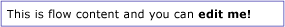
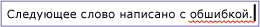
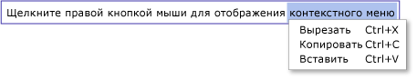
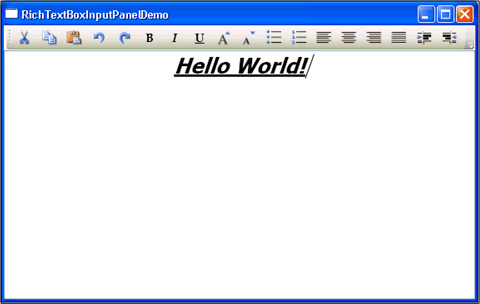

Общие сведения о RichTextBox
RichTextBox Элемент управления позволяет отображать или изменять Подвижное содержимое, включая абзацы, изображения, таблицы и многое другое. В данном разделе представлены TextBox класса и приводятся примеры его использования в оба Язык XAML и C#.
TextBox или RichTextBox?
Оба RichTextBox и TextBox разрешить пользователям изменять текст, однако два элемента управления используются в различных сценариях. Объект RichTextBox подходит лучше, когда это необходимо для пользователю необходимо отредактировать форматированный текст, изображения, таблицы или другое форматированное содержимое. Например, редактирование документа, статьи или блога, для которых требуется форматирование, изображений, и т.д., лучше всего выполнять с помощью RichTextBox. Объект TextBox требует меньше системных ресурсов то RichTextBox и это идеальный вариант, если только обычный текст должен быть изменена (т. е. для использования в формах). См. в разделе Общие сведения о TextBox Дополнительные сведения о TextBox. В следующей таблице перечислены основные возможности TextBox и RichTextBox.
| Элемент управления | Проверка орфографии в режиме реального времени | Контекстное меню | Форматирование команд как ToggleBold (CTRL + B) | FlowDocument содержимого, например изображения, абзацы, таблицы, и т.д. |
|---|---|---|---|---|
| TextBox | Да | Да | Нет | Нет. |
| RichTextBox | Да | Да | Да | Да |
Примечание. Несмотря на то что TextBox , не поддерживает связанные команды, такие как ToggleBold (CTRL + B), многие основные команды поддерживаются оба элемента управления, таких как MoveToLineEnd.
Функции из приведенной выше таблицы будут подробно рассматриваться далее.
Создание элемента управления RichTextBox
В приведенном ниже коде показано, как создать RichTextBox , пользователь может редактировать форматированное содержимое в.
<Page xmlns="http://schemas.microsoft.com/winfx/2006/xaml/presentation"
xmlns:x="http://schemas.microsoft.com/winfx/2006/xaml">
<!-- A RichTextBox with no initial content in it. -->
<RichTextBox />
</Page>
В частности, изменить содержимое в RichTextBox является подвижным содержимым. Содержимое нефиксированного формата может включать множество типов элементов, в том числе форматированный текст, изображения, списки и таблицы. См. более подробные сведения о потоковых документах в разделе Общие сведения о потоковых документах. Чтобы иметь Подвижное содержимое RichTextBox узлы FlowDocument объект, который в свою очередь содержит редактируемое содержимое. Для демонстрации подвижного содержимого в RichTextBox, приведенный ниже показано, как создать RichTextBox с абзацем и полужирным текстом.
<Page xmlns="http://schemas.microsoft.com/winfx/2006/xaml/presentation"
xmlns:x="http://schemas.microsoft.com/winfx/2006/xaml">
<StackPanel>
<RichTextBox>
<FlowDocument>
<Paragraph>
This is flow content and you can <Bold>edit me!</Bold>
</Paragraph>
</FlowDocument>
</RichTextBox>
</StackPanel>
</Page>
using System;
using System.Windows;
using System.Windows.Controls;
using System.Windows.Media;
using System.Windows.Documents;
namespace SDKSample
{
public partial class BasicRichTextBoxWithContentExample : Page
{
public BasicRichTextBoxWithContentExample()
{
StackPanel myStackPanel = new StackPanel();
// Create a FlowDocument to contain content for the RichTextBox.
FlowDocument myFlowDoc = new FlowDocument();
// Create a Run of plain text and some bold text.
Run myRun = new Run("This is flow content and you can ");
Bold myBold = new Bold(new Run("edit me!"));
// Create a paragraph and add the Run and Bold to it.
Paragraph myParagraph = new Paragraph();
myParagraph.Inlines.Add(myRun);
myParagraph.Inlines.Add(myBold);
// Add the paragraph to the FlowDocument.
myFlowDoc.Blocks.Add(myParagraph);
RichTextBox myRichTextBox = new RichTextBox();
// Add initial content to the RichTextBox.
myRichTextBox.Document = myFlowDoc;
myStackPanel.Children.Add(myRichTextBox);
this.Content = myStackPanel;
}
}
}
Warning
It looks like the sample you are looking for does not exist.
На рисунке ниже показано, как будет выглядеть этот пример.

Элементы, такие как Paragraph и Bold определить, каким образом содержимое внутри RichTextBox отображается. Когда пользователь редактирует RichTextBox содержимого, они изменяют содержимое потока. Дополнительные сведения о возможностях подвижного содержимого и способах работы с ним см. в разделе Общие сведения о потоковых документах.
Примечание. Содержимое внутри потока RichTextBox работать не так, как в других элементах управления. Например, отсутствуют столбцы в RichTextBox и поэтому не автоматического изменения размеров. Кроме того, встроенные функции, такие как поиск, режим просмотра, навигация по страницам и увеличение, не доступны в RichTextBox.
Проверка орфографии в режиме реального времени
Вы можете включить проверка орфографии в режиме реального времени TextBox или RichTextBox. При включенной проверке орфографии все слова с ошибками подчеркиваются красной линией (см. рисунок ниже).

Чтобы научиться включать проверку правописания, см. раздел Включение проверки орфографии в элементе управления редактирования текста.
Контекстное меню
По умолчанию оба TextBox и RichTextBox имеют контекстное меню, которое появляется, когда пользователь щелкает правой кнопкой мыши внутри элемента управления. Контекстное меню дает пользователю возможность вырезания, копирования и вставки (см. рисунок ниже).

Можно создать собственное пользовательское контекстное меню, чтобы переопределить меню по умолчанию. Дополнительные сведения см. в разделе Расположение пользовательского контекстного меню в RichTextBox.
Команды редактирования
Команды редактирования позволяют пользователям форматировать редактируемое содержимое в RichTextBox. Помимо основных команд редактирования, RichTextBox включает команды форматирования, которые TextBox не поддерживает. Например, при редактировании в RichTextBox, пользователь может нажать CTRL + B, чтобы переключить форматирование текста полужирным шрифтом. См. в разделе EditingCommands полный список доступных команд. Помимо использования сочетания клавиш, можно подключать команды к другим элементам управления, таким как кнопки. В следующем примере показано, как создать простую панель инструментов, содержащую кнопки, с помощью которых пользователь может изменять форматирование текста.
<Window x:Class="RichTextBoxInputPanelDemo.Window1"
xmlns="http://schemas.microsoft.com/winfx/2006/xaml/presentation"
xmlns:x="http://schemas.microsoft.com/winfx/2006/xaml" Height="400" Width="600"
>
<Grid>
<!-- Set the styles for the tool bar. -->
<Grid.Resources>
<Style TargetType="{x:Type Button}" x:Key="formatTextStyle">
<Setter Property="FontFamily" Value="Palatino Linotype"></Setter>
<Setter Property="Width" Value="30"></Setter>
<Setter Property="FontSize" Value ="14"></Setter>
<Setter Property="CommandTarget" Value="{Binding ElementName=mainRTB}"></Setter>
</Style>
<Style TargetType="{x:Type Button}" x:Key="formatImageStyle">
<Setter Property="Width" Value="30"></Setter>
<Setter Property="CommandTarget" Value="{Binding ElementName=mainRTB}"></Setter>
</Style>
</Grid.Resources>
<DockPanel Name="mainPanel">
<!-- This tool bar contains all the editing buttons. -->
<ToolBar Name="mainToolBar" Height="30" DockPanel.Dock="Top">
<Button Style="{StaticResource formatImageStyle}" Command="ApplicationCommands.Cut" ToolTip="Cut">
<Image Source="Images\EditCut.png"></Image>
</Button>
<Button Style="{StaticResource formatImageStyle}" Command="ApplicationCommands.Copy" ToolTip="Copy">
<Image Source="Images\EditCopy.png"></Image>
</Button>
<Button Style="{StaticResource formatImageStyle}" Command="ApplicationCommands.Paste" ToolTip="Paste">
<Image Source="Images\EditPaste.png"></Image>
</Button>
<Button Style="{StaticResource formatImageStyle}" Command="ApplicationCommands.Undo" ToolTip="Undo">
<Image Source="Images\EditUndo.png"></Image>
</Button>
<Button Style="{StaticResource formatImageStyle}" Command="ApplicationCommands.Redo" ToolTip="Redo">
<Image Source="Images\EditRedo.png"></Image>
</Button>
<Button Style="{StaticResource formatTextStyle}" Command="EditingCommands.ToggleBold" ToolTip="Bold">
<TextBlock FontWeight="Bold">B</TextBlock>
</Button>
<Button Style="{StaticResource formatTextStyle}" Command="EditingCommands.ToggleItalic" ToolTip="Italic">
<TextBlock FontStyle="Italic" FontWeight="Bold">I</TextBlock>
</Button>
<Button Style="{StaticResource formatTextStyle}" Command="EditingCommands.ToggleUnderline" ToolTip="Underline">
<TextBlock TextDecorations="Underline" FontWeight="Bold">U</TextBlock>
</Button>
<Button Style="{StaticResource formatImageStyle}" Command="EditingCommands.IncreaseFontSize" ToolTip="Grow Font">
<Image Source="Images\CharacterGrowFont.png"></Image>
</Button>
<Button Style="{StaticResource formatImageStyle}" Command="EditingCommands.DecreaseFontSize" ToolTip="Shrink Font">
<Image Source="Images\CharacterShrinkFont.png"></Image>
</Button>
<Button Style="{StaticResource formatImageStyle}" Command="EditingCommands.ToggleBullets" ToolTip="Bullets">
<Image Source="Images\ListBullets.png"></Image>
</Button>
<Button Style="{StaticResource formatImageStyle}" Command="EditingCommands.ToggleNumbering" ToolTip="Numbering">
<Image Source="Images/ListNumbering.png"></Image>
</Button>
<Button Style="{StaticResource formatImageStyle}" Command="EditingCommands.AlignLeft" ToolTip="Align Left">
<Image Source="Images\ParagraphLeftJustify.png"></Image>
</Button>
<Button Style="{StaticResource formatImageStyle}" Command="EditingCommands.AlignCenter" ToolTip="Align Center">
<Image Source="Images\ParagraphCenterJustify.png"></Image>
</Button>
<Button Style="{StaticResource formatImageStyle}" Command="EditingCommands.AlignRight" ToolTip="Align Right">
<Image Source="Images\ParagraphRightJustify.png"></Image>
</Button>
<Button Style="{StaticResource formatImageStyle}" Command="EditingCommands.AlignJustify" ToolTip="Align Justify">
<Image Source="Images\ParagraphFullJustify.png"></Image>
</Button>
<Button Style="{StaticResource formatImageStyle}" Command="EditingCommands.IncreaseIndentation" ToolTip="Increase Indent">
<Image Source="Images\ParagraphIncreaseIndentation.png"></Image>
</Button>
<Button Style="{StaticResource formatImageStyle}" Command="EditingCommands.DecreaseIndentation" ToolTip="Decrease Indent">
<Image Source="Images\ParagraphDecreaseIndentation.png"></Image>
</Button>
</ToolBar>
<!-- By default pressing tab moves focus to the next control. Setting AcceptsTab to true allows the
RichTextBox to accept tab characters. -->
<RichTextBox Name="mainRTB" AcceptsTab="True"></RichTextBox>
</DockPanel>
</Grid>
</Window>
На следующем рисунке показано, как будет выглядеть этот пример.

Определение изменения содержимого
Обычно TextChanged событие должно использоваться, чтобы определить, когда текст в TextBox или RichTextBox изменится, то вместо KeyDown как можно ожидать. Пример см. в разделе Определение изменения текста в TextBox.
Сохранение, загрузка и печать содержимого RichTextBox
В следующем примере показано, как сохранить содержимое RichTextBox в файл, загрузить это содержимое обратно в RichTextBoxи напечатать содержимое. Ниже для примера приведена разметка.
<Page xmlns="http://schemas.microsoft.com/winfx/2006/xaml/presentation"
xmlns:x="http://schemas.microsoft.com/winfx/2006/xaml"
x:Class="SDKSample.SaveLoadPrintRTB" >
<StackPanel>
<RichTextBox Name="richTB">
<FlowDocument>
<Paragraph>
<Run>Paragraph 1</Run>
</Paragraph>
</FlowDocument>
</RichTextBox>
<Button Click="SaveRTBContent">Save RTB Content</Button>
<Button Click="LoadRTBContent">Load RTB Content</Button>
<Button Click="PrintRTBContent">Print RTB Content</Button>
</StackPanel>
</Page>
Ниже для примера приведен код.
using System;
using System.IO;
using System.Windows;
using System.Windows.Controls;
using System.Windows.Documents;
using System.Windows.Media;
namespace SDKSample
{
public partial class SaveLoadPrintRTB : Page
{
// Handle "Save RichTextBox Content" button click.
void SaveRTBContent(Object sender, RoutedEventArgs args)
{
// Send an arbitrary URL and file name string specifying
// the location to save the XAML in.
SaveXamlPackage("C:\\test.xaml");
}
// Handle "Load RichTextBox Content" button click.
void LoadRTBContent(Object sender, RoutedEventArgs args)
{
// Send URL string specifying what file to retrieve XAML
// from to load into the RichTextBox.
LoadXamlPackage("C:\\test.xaml");
}
// Handle "Print RichTextBox Content" button click.
void PrintRTBContent(Object sender, RoutedEventArgs args)
{
PrintCommand();
}
// Save XAML in RichTextBox to a file specified by _fileName
void SaveXamlPackage(string _fileName)
{
TextRange range;
FileStream fStream;
range = new TextRange(richTB.Document.ContentStart, richTB.Document.ContentEnd);
fStream = new FileStream(_fileName, FileMode.Create);
range.Save(fStream, DataFormats.XamlPackage);
fStream.Close();
}
// Load XAML into RichTextBox from a file specified by _fileName
void LoadXamlPackage(string _fileName)
{
TextRange range;
FileStream fStream;
if (File.Exists(_fileName))
{
range = new TextRange(richTB.Document.ContentStart, richTB.Document.ContentEnd);
fStream = new FileStream(_fileName, FileMode.OpenOrCreate);
range.Load(fStream, DataFormats.XamlPackage);
fStream.Close();
}
}
// Print RichTextBox content
private void PrintCommand()
{
PrintDialog pd = new PrintDialog();
if ((pd.ShowDialog() == true))
{
//use either one of the below
pd.PrintVisual(richTB as Visual, "printing as visual");
pd.PrintDocument((((IDocumentPaginatorSource)richTB.Document).DocumentPaginator), "printing as paginator");
}
}
}
}
Warning
It looks like the sample you are looking for does not exist.